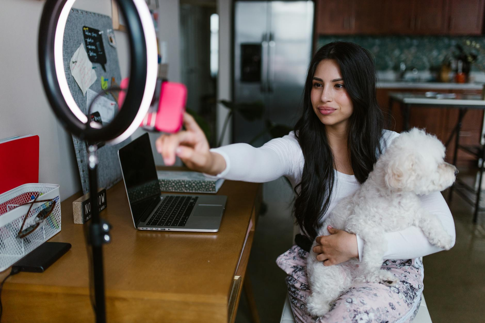
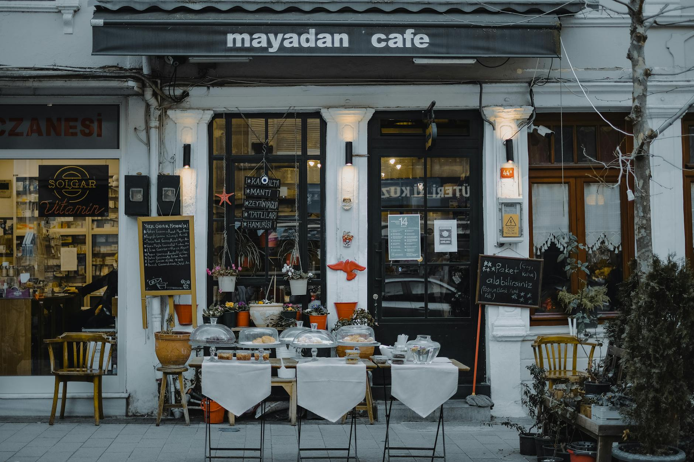

A verified Google Business Profile is only the beginning. The businesses winning local Map Pack positions in 2026 are the ones optimizing their profiles on a weekly schedule, not setting them once and walking away. Respond to every review, post every week, answer every question in the Q&A section, and add new photos monthly. Those four activities account for the majority of the gap between a profile that ranks and one that doesn't.
This guide covers what changed in 2026 and the specific tasks that move local ranking in the current algorithm. For the initial setup process, see how to build consistent Google review volume once your profile is live.
1. Optimize for AI Overviews and AI Search
Google AI Overviews now appear in a significant share of local searches. When someone asks a question like "best plumber near me" or "what time does [business] close on Saturday," AI Overviews pull answers from structured data sources, including Google Business Profiles. Optimizing your GBP for AI extraction is different from traditional SEO.
Write your business description as if you're answering the most common question a new customer would ask: what do you do, where are you, and why should someone choose you over the next option. That structure makes your description extractable by AI systems scanning for direct answers.
- Use complete sentences in your business description, not keyword lists
- Include your city and primary service area once each, naturally in prose
- Add specific service details in your Services section, as AI systems index these fields separately from the description
- Answer questions in your Q&A section with complete sentences that include the service keyword and location naturally
The local SEO and Map Pack ranking guide covers the full algorithm signal breakdown for businesses trying to rank in their area.
2. Post Weekly on Google Business Profile
GBP Posts expire after seven days for the standard update type. Posting at least once per week keeps your profile visually active and signals to Google that the business is open and engaged. Profiles with recent posts tend to appear higher in competitive local categories where multiple businesses have similar review counts and ratings.
Batch your posts monthly. On the first Monday of each month, write four posts and schedule them weekly. Each post should include a photo, 100-200 words of copy, and a call to action. Post types that consistently perform well for local businesses:
- Offer posts: A specific, time-limited deal. Google adds a "View offer" button that shows in Maps.
- What's new posts: A service addition, a staff update, or a project you completed. These expire after 7 days but stay in the Post tab.
- Event posts: A community event, open house, or sale. Events show an event label in the Map result.
- Product posts: A specific product with a photo, price, and description. Products stay until you remove them.

3. Manage the Q&A Section Actively
The Google Business Profile Q&A section is publicly editable. Any Google user can ask a question, and any Google user can answer it. Left unmanaged, incorrect answers accumulate and damage customer trust before someone even clicks through to your website. In 2026, actively curated Q&A sections also surface more frequently in Google's AI-generated answers to local questions.
- Check the Q&A section weekly for new questions. Turn on GBP notifications so you're alerted immediately.
- Seed the section yourself by asking and answering the 5 questions your staff gets asked most often. Use complete sentences and include service keywords naturally.
- Mark unhelpful or incorrect community answers as "Not helpful" to reduce their visibility.
- If a question is already answered by a customer with the correct information, upvote that answer rather than adding a duplicate.
- Include your city name once in Q&A answers where it makes sense: "We serve customers throughout [City] and the surrounding area."
4. Add Video Content to Your Profile
Google Business Profile now supports video uploads directly in the Media tab, and videos appear in local search results for businesses in competitive categories. A 30-60 second video of your storefront, a service being performed, or a product demonstration adds a visual dimension to your listing that most local competitors haven't invested in.
- Maximum file size: 75 MB
- Maximum duration: 30 seconds (some accounts allow up to 3 minutes)
- Minimum resolution: 720p
- Accepted formats: MP4, MOV, AVI
- No overlaid text, logos, or promotional graphics. Google removes videos that look like advertisements.
- Shoot handheld in natural light for the most authentic appearance. Studio-quality production can look like an ad.

5. Geo-Tag Your Photos Before Uploading
Photos uploaded to Google Business Profile can contain location metadata in their EXIF data. This latitude and longitude information, embedded before upload, reinforces the geographic relevance signal that Google uses to determine which searches your profile is relevant to. Most smartphones embed GPS coordinates automatically when photos are taken on-site. Photos taken on-location and uploaded directly from that device include this data by default.
- Take all business photos at your physical business location, not at home or in a studio, so the GPS coordinates in EXIF data match your business address.
- If you edit photos before uploading (cropping, adjusting brightness), use an editor that preserves EXIF data rather than stripping it.
- Name photo files descriptively before uploading: "storefront-north-entrance-chicago.jpg" rather than "IMG_2847.jpg." File names are readable by search systems.
- Write a descriptive caption for each photo after uploading in the GBP dashboard. Captions are indexed by Google.
6. Build a Review Response System
Responding to every review, positive and negative, is one of the highest-impact GBP optimization activities available. 64 percent of consumers say they are more likely to patronize a business that responds to negative reviews, according to BrightLocal's 2024 Local Consumer Review Survey. Responding also signals active profile management to Google's local ranking algorithm.
- Respond to positive reviews within 24 hours. Thank the reviewer, mention the specific service they mentioned, and invite them back.
- Respond to negative reviews within 4 hours. Acknowledge the problem, apologize without excuses, and offer a direct contact for resolution. Never argue publicly.
- Never copy and paste the same template response. Identical responses signal automation to both Google and customers.
- Include your business name and location once per response where it reads naturally. These responses are indexed by Google and appear in search results.
For building the review volume itself, see the system for getting consistent Google reviews. For reading what your profile data is telling you, see Google Business Profile Insights explained.
Frequently Asked Questions
Sources
- BrightLocal — Local Consumer Review Survey 2024. brightlocal.com
- Google — Improve your local ranking on Google. support.google.com/business/answer/7091
- Google — Add photos and videos to your Business Profile. support.google.com/business/answer/6103862
- Whitespark — Local Search Ranking Factors Survey 2024. whitespark.ca